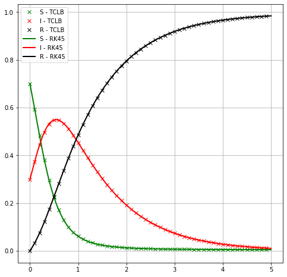

import h5py
import numpy as np
import matplotlib.pyplot as plt
import CLB.CLBXMLWriter as CLBXML
import tempfile
import scipy.optimize as so
from display_xml import XML
from scipy.integrate import solve_ivp
First shot: spatially variable SIR model with uniform IC¶
To evaluate, if model is working, let’s start with basic case: uniform initial distribution of SIR variables, with periodic BC. This should give solution for original SIR ODE, if \(\beta\) is sufficiently large.
Firstly, we prepare solution of ODE using SymPy’s solve_ivp toolbox. For details see previous workshops.
#Test case settings
I_init = 0.3
S_init = 1. - I_init
R_init = 0
Beta = 5
Gamma = 1
T = 5
###########################3
# FD SOLUTION #
def SIR_0D(t, z, beta, gamma, N):
"""
# Susceptible → Infected → Removed
:param t: time [days]
:param z: Susceptible, Exposed, Infected, Removed
:param beta: average number of contacts per day for each infected individual
:param gamma: Between I and R, the transition rate is γ
(simply the frequency of recoveries, that is, number of recovered or dead during one day
divided by the total number of infected on that same day, supposing "day" is the time unit).
If the duration of the infection is denoted D, then γ = 1/D.
:return: derivatives [dS, dI, dR]
"""
S, I, R = z
dSdt = -beta*I*S/N
dIdt = beta*I*S/N - I*gamma
dRdt = I*gamma
return [dSdt, dIdt, dRdt]
# INITIAL CONDItIONS
initial_susceptible = S_init # initial number of susceptible individuals in population.
initial_infections = I_init # initial number of infected individuals in population.
initial_removed = R_init # initial number of removed (recovered) individuals in population.
IC = np.array([initial_susceptible, initial_infections, initial_removed])
days_to_simulate = T
sol = solve_ivp(SIR_0D,
[0, days_to_simulate],
IC,
method='RK45',
args=[Beta, Gamma, 1],
dense_output=True)
t_rk4 = np.linspace(0, days_to_simulate, 1000)
z = sol.sol(t_rk4)
S_rk4, I_rk4, R_rk4 = z
params = {'legend.fontsize': 'xx-large',
'figure.figsize': (14, 8),
'axes.labelsize': 'xx-large',
'axes.titlesize':'xx-large',
'xtick.labelsize':'xx-large',
'ytick.labelsize':'xx-large'}
axes = plt.gca()
plt.plot(t_rk4, S_rk4,
color="green", marker="", markevery=1, markersize=15, linestyle="-", linewidth=2,
label='Susceptible')
plt.plot(t_rk4, I_rk4,
color="red", marker="", markevery=1, markersize=15, linestyle="-", linewidth=2,
label='Infected')
plt.plot(t_rk4, R_rk4,
color="black", marker="", markevery=1, markersize=15, linestyle="-", linewidth=2,
label='Removed')
plt.xlabel('t')
plt.ylabel('% of people')
plt.title('SIR Epidemic Calculator')
plt.legend()
plt.grid()
plt.show()
# plt.plot(t_rk4, S_rk4,
# color="green", marker="", markevery=1, markersize=15, linestyle="-", linewidth=2,
# label='S - RK45')
# plt.plot(t_rk4, I_rk4,
# color="red", marker="", markevery=1, markersize=15, linestyle="-", linewidth=2,
# label='I - RK45')
# plt.plot(t_rk4, R_rk4,
# color="black", marker="", markevery=1, markersize=15, linestyle="-", linewidth=2,
# label='R - RK45')
# plt.legend()
We will use d2q9_reaction_diffusion_system_SIR_ModifiedPeng model (or the WSIR model), aleready referenced in this workshop
\[\begin{split}
\frac{\partial}{\partial t} W = \beta_W \left[\frac{r^2}{8}W + (I-W) \right] \\
\frac{\partial}{\partial t} S = - \beta \frac{S}{N}W\\
\frac{\partial}{\partial t} I = \beta \frac{S}{N}W - \gamma I \\
\frac{\partial}{\partial t} R = \gamma I
\end{split}\]
where
\[\begin{split}
S = ODE_1 \\
I = ODE_2 \\
R = ODE_3 \\
C_1 = R_0 \\
C_2 = \beta\\
C_3 = dt
\end{split}\]
dt = 0.001
CLBc = CLBXML.CLBConfigWriter( )
CLBc.addGeomParam('nx', 1)
CLBc.addGeomParam('ny', 1)
Beta_w = 1 / dt
params = {
"Diffusivity_W" : 1./6.,
"Beta":Beta * dt,
"Beta_w":Beta_w * dt,
"Gamma":Gamma * dt,
"Init_W":0, #This is W equation, initlally equall to I. large Beta reduces Relaxation-To-SIR Time
"Init_S":S_init,
"Init_I":I_init,
"Init_R":R_init,
"Init_N":1
}
CLBc.addModelParams(params)
CLBc.addHDF5()
T_lbm = int(T / dt)
SaveEvery = int(T_lbm / 50)
solve = CLBc.addSolve(iterations=T_lbm)
CLBc.addHDF5(Iterations=SaveEvery, parent=solve)
CLBc.write('WSIR-UniformIC.xml')
! tclb d2q9_reaction_diffusion_system_SIR_ModifiedPeng WSIR-UniformIC.xml > /dev/null && echo 'Done'
Hello allocator!
Done
S = list()
I = list()
R = list()
t_lb = list()
for i in range(0,T_lbm,SaveEvery):
f = h5py.File('output/WSIR-UniformIC_HDF5_%08d.h5'%i)
#plt.plot(f['DRE_1'][0,25,:])
S.append( f['S'][0,0,0] )
I.append( f['I'][0,0,0] )
R.append( f['R'][0,0,0] )
t_lb.append(i)
t_lb = np.array(t_lb)*dt
plt.figure(figsize=(8,8))
plt.plot(t_lb,S, 'gx', label='S - TCLB')
plt.plot(t_lb,I, 'rx', label='I - TCLB')
plt.plot(t_lb,R, 'kx', label='R - TCLB')
plt.plot(t_rk4, S_rk4,
color="green", marker="", markevery=1, markersize=15, linestyle="-", linewidth=2,
label='S - RK45')
plt.plot(t_rk4, I_rk4,
color="red", marker="", markevery=1, markersize=15, linestyle="-", linewidth=2,
label='I - RK45')
plt.plot(t_rk4, R_rk4,
color="black", marker="", markevery=1, markersize=15, linestyle="-", linewidth=2,
label='R - RK45')
plt.legend()
plt.grid(which='both')

We could use TCLB shortcuts in a loop, to see effects of \(\beta\)¶
plt.figure(figsize=(8,8))
for _beta in np.logspace(-5,0,4):
CLBc = CLBXML.CLBConfigWriter( )
CLBc.addGeomParam('nx', 1)
CLBc.addGeomParam('ny', 1)
params = {
"Diffusivity_W" : 1./6.,
"Beta_w": (_beta / dt) * dt,
"Beta":Beta * dt,
"Gamma":Gamma * dt,
"Init_W":I_init, #This is W equation, initlally equall to I. to ensure that large Beta reduces Relaxation-To-SIR Time
"Init_S":S_init,
"Init_I":I_init,
"Init_R":R_init,
"Init_N":1
}
CLBc.addModelParams(params)
CLBc.addHDF5()
solve = CLBc.addSolve(iterations=T_lbm)
CLBc.addHDF5(Iterations=SaveEvery, parent=solve)
CLBc.write('WSIR-UniformIC-iterBeta.xml')
! rm -rf output/* && tclb d2q9_reaction_diffusion_system_SIR_ModifiedPeng WSIR-UniformIC-iterBeta.xml > /dev/null && echo "DONE!"
S = list()
I = list()
R = list()
t_lb = list()
for i in range(0,T_lbm,SaveEvery):
f = h5py.File('output/WSIR-UniformIC-iterBeta_HDF5_%08d.h5'%i)
#plt.plot(f['DRE_1'][0,25,:])
S.append( f['S'][0,0,0] )
I.append( f['I'][0,0,0] )
R.append( f['R'][0,0,0] )
t_lb.append(i)
t_lb = np.array(t_lb)*dt
plt.plot(t_lb,I, '-x', label=r'Infected - TCLB ($\beta=%e$)'%(_beta/dt) )
plt.plot(t_rk4, I_rk4,
color="red", marker="", markevery=1, markersize=15, linestyle="-", linewidth=2,
label='Infected - RK45')
plt.legend()
plt.grid(which='both')
plt.xlabel('Time')
plt.ylabel('% of population')
Hello allocator!
DONE!
Hello allocator!
DONE!
Hello allocator!
DONE!
Hello allocator!
DONE!
Text(0, 0.5, '% of population')
Transition from WSIR to SIR¶
plt.figure(figsize=(8,8))
for _beta in np.logspace(-5,0,5):
CLBc = CLBXML.CLBConfigWriter( )
CLBc.addGeomParam('nx', 1)
CLBc.addGeomParam('ny', 1)
params = {
"Diffusivity_W" : 1./6.,
"Beta_w": (_beta / dt) * dt,
"Beta":Beta * dt,
"Gamma":Gamma * dt,
"Init_W":0, #No initial "Virial Load"
"Init_S":S_init,
"Init_I":I_init,
"Init_R":R_init,
"Init_N":1
}
CLBc.addModelParams(params)
CLBc.addHDF5()
solve = CLBc.addSolve(iterations=T_lbm)
CLBc.addHDF5(Iterations=SaveEvery, parent=solve)
CLBc.write('WSIR-UniformIC-iterBeta.xml')
! rm -rf output/* && tclb d2q9_reaction_diffusion_system_SIR_ModifiedPeng WSIR-UniformIC-iterBeta.xml > /dev/null && echo "DONE!"
S = list()
I = list()
R = list()
t_lb = list()
for i in range(0,T_lbm,SaveEvery):
f = h5py.File('output/WSIR-UniformIC-iterBeta_HDF5_%08d.h5'%i)
#plt.plot(f['DRE_1'][0,25,:])
S.append( f['S'][0,0,0] )
I.append( f['I'][0,0,0] )
R.append( f['R'][0,0,0] )
t_lb.append(i)
t_lb = np.array(t_lb)*dt
plt.plot(t_lb,I, '-x', label=r'Infected - TCLB ($\beta=%e$)'%(_beta/dt) )
plt.plot(t_rk4, I_rk4,
color="red", marker="", markevery=1, markersize=15, linestyle="-", linewidth=2,
label='Infected - RK45')
plt.legend()
plt.grid(which='both')
plt.xlabel('Time')
plt.ylabel('% of population')
Hello allocator!
DONE!
Hello allocator!
DONE!
Hello allocator!
DONE!
Hello allocator!
DONE!
Hello allocator!
DONE!
Text(0, 0.5, '% of population')
SIR - Simple Laplace¶
The same could be done with SIR_SimpleLaplace model - for large \(\beta\) results are identical
CLBc = CLBXML.CLBConfigWriter( )
CLBc.addGeomParam('nx', 5)
CLBc.addGeomParam('ny', 5)
params = {
"Diffusivity_S" : 1./6.,
"Diffusivity_I" : 1./6.,
"Diffusivity_R" : 1./6.,
"Beta":Beta*dt,
"Gamma":Gamma*dt,
"Init_S":S_init,
"Init_I":I_init,
"Init_R":R_init
}
CLBc.addModelParams(params)
CLBc.addHDF5()
solve = CLBc.addSolve(iterations=T_lbm)
CLBc.addHDF5(Iterations=SaveEvery, parent=solve)
CLBc.write('SIRwithDiffusion.xml')
! rm -rf output/* && tclb d2q9_reaction_diffusion_system_SIR_SimpleLaplace SIRwithDiffusion.xml > /dev/null && echo "DONE!"
S = list()
I = list()
R = list()
t_lb = list()
for i in range(0,T_lbm,SaveEvery):
f = h5py.File('output/SIRwithDiffusion_HDF5_%08d.h5'%i)
#plt.plot(f['DRE_1'][0,25,:])
S.append( f['S'][0,0,0] )
I.append( f['I'][0,0,0] )
R.append( f['R'][0,0,0] )
t_lb.append(i)
t_lb = np.array(t_lb)*dt
plt.figure(figsize=(8,8))
plt.plot(t_lb,S, 'gx', label='S - TCLB')
plt.plot(t_lb,I, 'rx', label='I - TCLB')
plt.plot(t_lb,R, 'kx', label='R - TCLB')
plt.plot(t_rk4, S_rk4,
color="green", marker="", markevery=1, markersize=15, linestyle="-", linewidth=2,
label='S - RK45')
plt.plot(t_rk4, I_rk4,
color="red", marker="", markevery=1, markersize=15, linestyle="-", linewidth=2,
label='I - RK45')
plt.plot(t_rk4, R_rk4,
color="black", marker="", markevery=1, markersize=15, linestyle="-", linewidth=2,
label='R - RK45')
plt.legend()
plt.grid(which='both')
Hello allocator!
DONE!